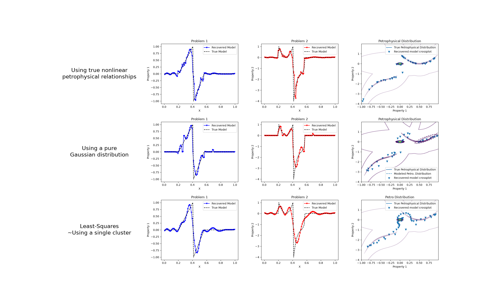

Note
Go to the end to download the full example code.
Petrophysically guided inversion: Joint linear example with nonlinear relationships#
We do a comparison between the classic least-squares inversion and our formulation of a petrophysically guided inversion. We explore it through coupling two linear problems whose respective physical properties are linked by polynomial relationships that change between rock units.

Running inversion with SimPEG v0.25.2.dev22+g0a002be16
Alpha scales: [np.float64(3.5047206342146566), np.float64(0.0), np.float64(3.501742220539212e-06), np.float64(0.0)]
Calculating the scaling parameter.
Scale Multipliers: [0.09833383 0.90166617]
<class 'simpeg.regularization.pgi.PGIsmallness'>
Initial data misfit scales: [0.09833383 0.90166617]
================================================= Projected GNCG =================================================
# beta phi_d phi_m f |proj(x-g)-x| LS iter_CG CG |Ax-b|/|b| CG |Ax-b| Comment
-----------------------------------------------------------------------------------------------------------------
0 1.92e+01 3.00e+05 0.00e+00 3.00e+05 0 inf inf
1 1.92e+01 1.65e+03 1.70e+02 4.91e+03 1.40e+02 0 19 9.05e-04 8.37e+03
geophys. misfits: 8238.4 (target 30.0 [False]); 936.7 (target 30.0 [False]) | smallness misfit: 3999.2 (target: 200.0 [False])
Beta cooling evaluation: progress: [8238.4 936.7]; minimum progress targets: [240000. 240000.]
2 1.92e+01 6.82e+01 4.10e+01 8.55e+02 1.40e+02 0 100 4.19e-03 3.50e+01 Skip BFGS
geophys. misfits: 457.9 (target 30.0 [False]); 25.7 (target 30.0 [True]) | smallness misfit: 1478.9 (target: 200.0 [False])
Beta cooling evaluation: progress: [457.9 25.7]; minimum progress targets: [6590.7 749.4]
Updating scaling for data misfits by 1.168900848457528
New scales: [0.11306465 0.88693535]
3 1.92e+01 6.49e+01 4.05e+01 8.43e+02 6.87e+01 0 100 3.99e-02 6.74e+00 Skip BFGS
geophys. misfits: 377.2 (target 30.0 [False]); 25.1 (target 30.0 [True]) | smallness misfit: 1286.3 (target: 200.0 [False])
Beta cooling evaluation: progress: [377.2 25.1]; minimum progress targets: [366.4 30. ]
Decreasing beta to counter data misfit decrase plateau.
Updating scaling for data misfits by 1.1938333801996994
New scales: [0.1320856 0.8679144]
4 9.60e+00 3.15e+01 4.31e+01 4.45e+02 8.72e+01 0 100 1.60e-02 6.64e+00
geophys. misfits: 105.7 (target 30.0 [False]); 20.2 (target 30.0 [True]) | smallness misfit: 1313.8 (target: 200.0 [False])
Beta cooling evaluation: progress: [105.7 20.2]; minimum progress targets: [301.7 30. ]
Updating scaling for data misfits by 1.487774902135314
New scales: [0.184619 0.815381]
5 9.60e+00 3.00e+01 4.36e+01 4.49e+02 6.66e+01 0 100 3.21e-01 4.47e+01 Skip BFGS
geophys. misfits: 71.4 (target 30.0 [False]); 20.6 (target 30.0 [True]) | smallness misfit: 1253.4 (target: 200.0 [False])
Beta cooling evaluation: progress: [71.4 20.6]; minimum progress targets: [84.6 30. ]
Updating scaling for data misfits by 1.456499850577471
New scales: [0.24799675 0.75200325]
6 9.60e+00 2.77e+01 4.41e+01 4.51e+02 6.97e+01 0 100 1.13e+00 1.92e+02 Skip BFGS
geophys. misfits: 47.7 (target 30.0 [False]); 21.1 (target 30.0 [True]) | smallness misfit: 1215.5 (target: 200.0 [False])
Beta cooling evaluation: progress: [47.7 21.1]; minimum progress targets: [57.1 30. ]
Updating scaling for data misfits by 1.4193482231636234
New scales: [0.31883578 0.68116422]
7 9.60e+00 2.43e+01 4.45e+01 4.52e+02 8.22e+01 0 100 2.67e-01 7.52e+01 Skip BFGS
geophys. misfits: 30.1 (target 30.0 [False]); 21.6 (target 30.0 [True]) | smallness misfit: 1193.6 (target: 200.0 [False])
Beta cooling evaluation: progress: [30.1 21.6]; minimum progress targets: [38.1 30. ]
Updating scaling for data misfits by 1.3857663336079833
New scales: [0.39344026 0.60655974]
8 9.60e+00 2.35e+01 4.46e+01 4.52e+02 7.03e+01 0 100 3.31e+00 4.66e+02
geophys. misfits: 25.0 (target 30.0 [True]); 22.5 (target 30.0 [True]) | smallness misfit: 1127.5 (target: 200.0 [False])
Beta cooling evaluation: progress: [25. 22.5]; minimum progress targets: [30. 30.]
Warming alpha_pgi to favor clustering: 1.2659848875857835
9 9.60e+00 2.29e+01 4.53e+01 4.58e+02 7.08e+01 0 100 1.27e-01 5.94e+01
geophys. misfits: 22.8 (target 30.0 [True]); 23.1 (target 30.0 [True]) | smallness misfit: 1089.9 (target: 200.0 [False])
Beta cooling evaluation: progress: [22.8 23.1]; minimum progress targets: [30. 30.]
Warming alpha_pgi to favor clustering: 1.6579577317472143
10 9.60e+00 2.32e+01 4.62e+01 4.67e+02 4.72e+01 0 100 6.80e-01 4.61e+01
geophys. misfits: 21.4 (target 30.0 [True]); 24.3 (target 30.0 [True]) | smallness misfit: 1022.4 (target: 200.0 [False])
Beta cooling evaluation: progress: [21.4 24.3]; minimum progress targets: [30. 30.]
Warming alpha_pgi to favor clustering: 2.1865919614283276
11 9.60e+00 2.36e+01 4.73e+01 4.78e+02 5.10e+01 0 100 6.50e-01 4.26e+01
geophys. misfits: 20.1 (target 30.0 [True]); 25.9 (target 30.0 [True]) | smallness misfit: 955.5 (target: 200.0 [False])
Beta cooling evaluation: progress: [20.1 25.9]; minimum progress targets: [30. 30.]
Warming alpha_pgi to favor clustering: 2.903799041564364
12 9.60e+00 2.39e+01 4.87e+01 4.92e+02 5.83e+01 0 100 3.92e+00 3.17e+02
geophys. misfits: 19.0 (target 30.0 [True]); 27.1 (target 30.0 [True]) | smallness misfit: 889.3 (target: 200.0 [False])
Beta cooling evaluation: progress: [19. 27.1]; minimum progress targets: [30. 30.]
Warming alpha_pgi to favor clustering: 3.8966294351463566
13 9.60e+00 2.49e+01 5.05e+01 5.10e+02 8.49e+01 0 100 2.82e+00 9.40e+02
geophys. misfits: 18.3 (target 30.0 [True]); 29.1 (target 30.0 [True]) | smallness misfit: 807.2 (target: 200.0 [False])
Beta cooling evaluation: progress: [18.3 29.1]; minimum progress targets: [30. 30.]
Warming alpha_pgi to favor clustering: 5.199713583959672
14 9.60e+00 2.70e+01 5.26e+01 5.32e+02 1.01e+02 0 100 7.74e-01 7.37e+02
geophys. misfits: 18.0 (target 30.0 [True]); 32.9 (target 30.0 [False]) | smallness misfit: 735.6 (target: 200.0 [False])
Beta cooling evaluation: progress: [18. 32.9]; minimum progress targets: [30. 30.]
Decreasing beta to counter data misfit increase.
Updating scaling for data misfits by 1.6704964128942923
New scales: [0.27969101 0.72030899]
15 4.80e+00 2.05e+01 5.37e+01 2.78e+02 9.10e+01 0 100 1.69e-01 9.08e+01
geophys. misfits: 11.9 (target 30.0 [True]); 23.8 (target 30.0 [True]) | smallness misfit: 771.8 (target: 200.0 [False])
Beta cooling evaluation: progress: [11.9 23.8]; minimum progress targets: [30. 30.]
Warming alpha_pgi to favor clustering: 9.818031735651074
16 4.80e+00 2.28e+01 6.05e+01 3.13e+02 8.94e+01 0 100 3.35e+00 7.48e+02
geophys. misfits: 14.1 (target 30.0 [True]); 26.1 (target 30.0 [True]) | smallness misfit: 618.7 (target: 200.0 [False])
Beta cooling evaluation: progress: [14.1 26.1]; minimum progress targets: [30. 30.]
Warming alpha_pgi to favor clustering: 16.05566033882415
17 4.80e+00 2.40e+01 6.82e+01 3.52e+02 1.05e+02 0 100 8.30e+00 6.64e+03
geophys. misfits: 18.0 (target 30.0 [True]); 26.3 (target 30.0 [True]) | smallness misfit: 504.6 (target: 200.0 [False])
Beta cooling evaluation: progress: [18. 26.3]; minimum progress targets: [30. 30.]
Warming alpha_pgi to favor clustering: 22.536643296587332
18 4.80e+00 2.92e+01 7.42e+01 3.86e+02 1.12e+02 0 100 3.08e-01 2.05e+03
geophys. misfits: 23.7 (target 30.0 [True]); 31.3 (target 30.0 [False]) | smallness misfit: 443.0 (target: 200.0 [False])
Beta cooling evaluation: progress: [23.7 31.3]; minimum progress targets: [30. 30.]
Decreasing beta to counter data misfit increase.
Updating scaling for data misfits by 1.2642754168540113
New scales: [0.23496339 0.76503661]
19 2.40e+00 2.24e+01 7.61e+01 2.05e+02 1.01e+02 0 100 2.19e+00 4.66e+03
geophys. misfits: 12.1 (target 30.0 [True]); 25.6 (target 30.0 [True]) | smallness misfit: 473.4 (target: 200.0 [False])
Beta cooling evaluation: progress: [12.1 25.6]; minimum progress targets: [30. 30.]
Warming alpha_pgi to favor clustering: 41.18460232268815
20 2.40e+00 1.94e+01 9.56e+01 2.49e+02 1.10e+02 0 100 4.04e-01 1.89e+03
geophys. misfits: 12.1 (target 30.0 [True]); 21.7 (target 30.0 [True]) | smallness misfit: 390.0 (target: 200.0 [False])
Beta cooling evaluation: progress: [12.1 21.7]; minimum progress targets: [30. 30.]
Warming alpha_pgi to favor clustering: 79.50642689770397
21 2.40e+00 2.04e+01 1.28e+02 3.28e+02 1.21e+02 0 100 2.10e+00 4.34e+03
geophys. misfits: 14.4 (target 30.0 [True]); 22.2 (target 30.0 [True]) | smallness misfit: 351.3 (target: 200.0 [False])
Beta cooling evaluation: progress: [14.4 22.2]; minimum progress targets: [30. 30.]
Warming alpha_pgi to favor clustering: 136.25242319195044
22 2.40e+00 2.09e+01 1.68e+02 4.23e+02 1.26e+02 1 100 3.07e+00 1.40e+04
geophys. misfits: 15.6 (target 30.0 [True]); 22.6 (target 30.0 [True]) | smallness misfit: 305.2 (target: 200.0 [False])
Beta cooling evaluation: progress: [15.6 22.6]; minimum progress targets: [30. 30.]
Warming alpha_pgi to favor clustering: 221.49517668743238
23 2.40e+00 2.35e+01 2.18e+02 5.47e+02 1.31e+02 1 100 2.34e+00 2.21e+04
geophys. misfits: 24.7 (target 30.0 [True]); 23.1 (target 30.0 [True]) | smallness misfit: 276.5 (target: 200.0 [False])
Beta cooling evaluation: progress: [24.7 23.1]; minimum progress targets: [30. 30.]
Warming alpha_pgi to favor clustering: 278.2460248609503
24 2.40e+00 2.84e+01 2.46e+02 6.18e+02 1.31e+02 1 100 2.13e+00 3.37e+04
geophys. misfits: 40.5 (target 30.0 [False]); 24.6 (target 30.0 [True]) | smallness misfit: 252.7 (target: 200.0 [False])
Beta cooling evaluation: progress: [40.5 24.6]; minimum progress targets: [30. 30.]
Decreasing beta to counter data misfit increase.
Updating scaling for data misfits by 1.2173578433600094
New scales: [0.27213622 0.72786378]
25 1.20e+00 2.69e+01 2.39e+02 3.13e+02 1.31e+02 1 100 6.65e-01 1.88e+04
geophys. misfits: 33.8 (target 30.0 [False]); 24.3 (target 30.0 [True]) | smallness misfit: 236.9 (target: 200.0 [False])
Beta cooling evaluation: progress: [33.8 24.3]; minimum progress targets: [32.4 30. ]
Decreasing beta to counter data misfit increase.
Updating scaling for data misfits by 1.23601366172611
New scales: [0.31606397 0.68393603]
26 6.00e-01 1.76e+01 2.46e+02 1.65e+02 1.20e+02 0 100 2.16e-01 5.88e+03
geophys. misfits: 10.0 (target 30.0 [True]); 21.1 (target 30.0 [True]) | smallness misfit: 240.5 (target: 200.0 [False])
Beta cooling evaluation: progress: [10. 21.1]; minimum progress targets: [30. 30.]
Warming alpha_pgi to favor clustering: 616.8767679296119
27 6.00e-01 2.04e+01 4.32e+02 2.80e+02 1.31e+02 1 100 5.97e-01 3.60e+03
geophys. misfits: 13.6 (target 30.0 [True]); 23.5 (target 30.0 [True]) | smallness misfit: 236.2 (target: 200.0 [False])
Beta cooling evaluation: progress: [13.6 23.5]; minimum progress targets: [30. 30.]
Warming alpha_pgi to favor clustering: 1076.5775334454802
28 6.00e-01 2.08e+01 6.90e+02 4.35e+02 1.37e+02 2 100 1.18e+00 6.28e+03
geophys. misfits: 13.4 (target 30.0 [True]); 24.2 (target 30.0 [True]) | smallness misfit: 232.3 (target: 200.0 [False])
Beta cooling evaluation: progress: [13.4 24.2]; minimum progress targets: [30. 30.]
Warming alpha_pgi to favor clustering: 1872.9756415569673
29 6.00e-01 2.05e+01 1.13e+03 7.01e+02 1.39e+02 2 100 3.03e+00 1.59e+04
geophys. misfits: 12.4 (target 30.0 [True]); 24.3 (target 30.0 [True]) | smallness misfit: 229.7 (target: 200.0 [False])
Beta cooling evaluation: progress: [12.4 24.3]; minimum progress targets: [30. 30.]
Warming alpha_pgi to favor clustering: 3424.932474073571
30 6.00e-01 2.24e+01 1.99e+03 1.22e+03 1.40e+02 2 100 5.14e+00 4.91e+04
geophys. misfits: 9.8 (target 30.0 [True]); 28.2 (target 30.0 [True]) | smallness misfit: 227.6 (target: 200.0 [False])
Beta cooling evaluation: progress: [ 9.8 28.2]; minimum progress targets: [30. 30.]
Warming alpha_pgi to favor clustering: 7038.604382934129
31 6.00e-01 2.45e+01 3.98e+03 2.42e+03 1.41e+02 3 100 5.84e+00 1.38e+05
geophys. misfits: 10.2 (target 30.0 [True]); 31.2 (target 30.0 [False]) | smallness misfit: 226.4 (target: 200.0 [False])
Beta cooling evaluation: progress: [10.2 31.2]; minimum progress targets: [30. 30.]
Decreasing beta to counter data misfit increase.
Updating scaling for data misfits by 2.9495127685220597
New scales: [0.13545548 0.86454452]
32 3.00e-01 2.90e+01 3.96e+03 1.22e+03 1.41e+02 3 100 3.53e+00 5.61e+04
geophys. misfits: 10.3 (target 30.0 [True]); 32.0 (target 30.0 [False]) | smallness misfit: 226.0 (target: 200.0 [False])
Beta cooling evaluation: progress: [10.3 32. ]; minimum progress targets: [30. 30.]
Decreasing beta to counter data misfit increase.
Updating scaling for data misfits by 2.9018592975367103
New scales: [0.05122658 0.94877342]
33 1.50e-01 2.62e+01 3.95e+03 6.19e+02 1.39e+02 2 100 5.50e-01 4.76e+03
geophys. misfits: 13.1 (target 30.0 [True]); 26.9 (target 30.0 [True]) | smallness misfit: 225.7 (target: 200.0 [False])
Beta cooling evaluation: progress: [13.1 26.9]; minimum progress targets: [30. 30.]
Warming alpha_pgi to favor clustering: 12004.482010042657
34 1.50e-01 2.53e+01 6.67e+03 1.03e+03 1.40e+02 3 100 1.78e+00 1.74e+04
geophys. misfits: 15.1 (target 30.0 [True]); 25.9 (target 30.0 [True]) | smallness misfit: 225.3 (target: 200.0 [False])
Beta cooling evaluation: progress: [15.1 25.9]; minimum progress targets: [30. 30.]
Warming alpha_pgi to favor clustering: 18905.089383569655
35 1.50e-01 2.49e+01 1.04e+04 1.59e+03 1.41e+02 3 100 1.03e+00 1.50e+04
geophys. misfits: 18.9 (target 30.0 [True]); 25.3 (target 30.0 [True]) | smallness misfit: 225.0 (target: 200.0 [False])
Beta cooling evaluation: progress: [18.9 25.3]; minimum progress targets: [30. 30.]
Warming alpha_pgi to favor clustering: 26218.303183103042
36 1.50e-01 2.49e+01 1.44e+04 2.19e+03 1.41e+02 4 100 1.15e+00 2.20e+04
geophys. misfits: 24.2 (target 30.0 [True]); 24.9 (target 30.0 [True]) | smallness misfit: 224.8 (target: 200.0 [False])
Beta cooling evaluation: progress: [24.2 24.9]; minimum progress targets: [30. 30.]
Warming alpha_pgi to favor clustering: 32026.038620644507
37 1.50e-01 2.42e+01 1.75e+04 2.65e+03 1.42e+02 4 100 1.08e+00 2.48e+04
geophys. misfits: 30.9 (target 30.0 [False]); 23.8 (target 30.0 [True]) | smallness misfit: 223.8 (target: 200.0 [False])
Beta cooling evaluation: progress: [30.9 23.8]; minimum progress targets: [30. 30.]
Decreasing beta to counter data misfit increase.
Updating scaling for data misfits by 1.2588987793120687
New scales: [0.06364499 0.93635501]
38 7.50e-02 2.35e+01 1.75e+04 1.34e+03 1.41e+02 3 100 8.44e-01 1.11e+04 Skip BFGS
geophys. misfits: 32.0 (target 30.0 [False]); 22.9 (target 30.0 [True]) | smallness misfit: 224.0 (target: 200.0 [False])
Beta cooling evaluation: progress: [32. 22.9]; minimum progress targets: [30. 30.]
Decreasing beta to counter data misfit increase.
Updating scaling for data misfits by 1.3074229037001621
New scales: [0.08161406 0.91838594]
39 3.75e-02 2.31e+01 1.75e+04 6.80e+02 1.39e+02 4 100 4.95e-01 5.19e+03
geophys. misfits: 31.5 (target 30.0 [False]); 22.3 (target 30.0 [True]) | smallness misfit: 223.7 (target: 200.0 [False])
Beta cooling evaluation: progress: [31.5 22.3]; minimum progress targets: [30. 30.]
Decreasing beta to counter data misfit increase.
Updating scaling for data misfits by 1.34409900088109
New scales: [0.10670087 0.89329913]
40 1.88e-02 1.93e+01 1.77e+04 3.51e+02 1.37e+02 0 100 3.24e-01 3.63e+03 Skip BFGS
geophys. misfits: 15.1 (target 30.0 [True]); 19.8 (target 30.0 [True]) | smallness misfit: 226.5 (target: 200.0 [False])
Beta cooling evaluation: progress: [15.1 19.8]; minimum progress targets: [30. 30.]
Warming alpha_pgi to favor clustering: 56107.352336221724
41 1.88e-02 2.02e+01 3.07e+04 5.97e+02 1.39e+02 3 100 9.33e-01 4.92e+03
geophys. misfits: 20.9 (target 30.0 [True]); 20.2 (target 30.0 [True]) | smallness misfit: 225.6 (target: 200.0 [False])
Beta cooling evaluation: progress: [20.9 20.2]; minimum progress targets: [30. 30.]
Warming alpha_pgi to favor clustering: 82038.32423250824
42 1.88e-02 2.00e+01 4.48e+04 8.60e+02 1.40e+02 4 100 1.27e+00 9.25e+03
geophys. misfits: 18.3 (target 30.0 [True]); 20.3 (target 30.0 [True]) | smallness misfit: 225.2 (target: 200.0 [False])
Beta cooling evaluation: progress: [18.3 20.3]; minimum progress targets: [30. 30.]
Warming alpha_pgi to favor clustering: 128065.48656947048
43 1.88e-02 2.02e+01 6.99e+04 1.33e+03 1.41e+02 3 100 9.58e-01 1.06e+04
geophys. misfits: 18.5 (target 30.0 [True]); 20.4 (target 30.0 [True]) | smallness misfit: 224.9 (target: 200.0 [False])
Beta cooling evaluation: progress: [18.5 20.4]; minimum progress targets: [30. 30.]
Warming alpha_pgi to favor clustering: 198290.14689610415
44 1.88e-02 2.00e+01 1.08e+05 2.05e+03 1.41e+02 4 100 1.46e+00 2.43e+04
geophys. misfits: 19.4 (target 30.0 [True]); 20.1 (target 30.0 [True]) | smallness misfit: 224.6 (target: 200.0 [False])
Beta cooling evaluation: progress: [19.4 20.1]; minimum progress targets: [30. 30.]
Warming alpha_pgi to favor clustering: 301905.9643481997
45 1.88e-02 2.04e+01 1.64e+05 3.10e+03 1.42e+02 3 100 1.52e+00 3.84e+04
geophys. misfits: 22.8 (target 30.0 [True]); 20.1 (target 30.0 [True]) | smallness misfit: 224.4 (target: 200.0 [False])
Beta cooling evaluation: progress: [22.8 20.1]; minimum progress targets: [30. 30.]
Warming alpha_pgi to favor clustering: 423624.84637031826
46 1.88e-02 2.04e+01 2.30e+05 4.34e+03 1.42e+02 4 100 1.07e+00 3.79e+04
geophys. misfits: 21.2 (target 30.0 [True]); 20.3 (target 30.0 [True]) | smallness misfit: 224.3 (target: 200.0 [False])
Beta cooling evaluation: progress: [21.2 20.3]; minimum progress targets: [30. 30.]
Warming alpha_pgi to favor clustering: 612843.1386386564
47 1.88e-02 2.04e+01 3.33e+05 6.27e+03 1.42e+02 5 100 1.09e+00 5.61e+04
geophys. misfits: 20.3 (target 30.0 [True]); 20.4 (target 30.0 [True]) | smallness misfit: 224.2 (target: 200.0 [False])
Beta cooling evaluation: progress: [20.3 20.4]; minimum progress targets: [30. 30.]
Warming alpha_pgi to favor clustering: 903401.1741952348
48 1.88e-02 2.06e+01 4.91e+05 9.23e+03 1.42e+02 4 100 9.98e-01 7.57e+04
geophys. misfits: 21.7 (target 30.0 [True]); 20.4 (target 30.0 [True]) | smallness misfit: 224.2 (target: 200.0 [False])
Beta cooling evaluation: progress: [21.7 20.4]; minimum progress targets: [30. 30.]
Warming alpha_pgi to favor clustering: 1287443.8085502645
49 1.88e-02 2.06e+01 6.99e+05 1.31e+04 1.42e+02 4 100 9.99e-01 1.08e+05
geophys. misfits: 21.5 (target 30.0 [True]); 20.5 (target 30.0 [True]) | smallness misfit: 224.2 (target: 200.0 [False])
Beta cooling evaluation: progress: [21.5 20.5]; minimum progress targets: [30. 30.]
Warming alpha_pgi to favor clustering: 1838588.5132990645
50 1.88e-02 2.06e+01 9.99e+05 1.88e+04 1.42e+02 4 100 9.99e-01 1.54e+05
geophys. misfits: 21.3 (target 30.0 [True]); 20.5 (target 30.0 [True]) | smallness misfit: 224.1 (target: 200.0 [False])
Beta cooling evaluation: progress: [21.3 20.5]; minimum progress targets: [30. 30.]
Warming alpha_pgi to favor clustering: 2635650.6646879455
------------------------- STOP! -------------------------
1 : |fc-fOld| = 8.1186e+03 <= tolF*(1+|f0|) = 3.0000e+04
0 : |xc-x_last| = 3.3038e-02 <= tolX*(1+|x0|) = 1.0000e-06
0 : |proj(x-g)-x| = 1.4203e+02 <= tolG = 1.0000e-01
0 : |proj(x-g)-x| = 1.4203e+02 <= 1e3*eps = 1.0000e-02
1 : maxIter = 50 <= iter = 50
------------------------- DONE! -------------------------
Running inversion with SimPEG v0.25.2.dev22+g0a002be16
Alpha scales: [np.float64(0.00035020880523276254), np.float64(0.0), np.float64(3.513354493239548e-06), np.float64(0.0)]
Calculating the scaling parameter.
Scale Multipliers: [0.09833383 0.90166617]
<class 'simpeg.regularization.pgi.PGIsmallness'>
Initial data misfit scales: [0.09833383 0.90166617]
================================================= Projected GNCG =================================================
# beta phi_d phi_m f |proj(x-g)-x| LS iter_CG CG |Ax-b|/|b| CG |Ax-b| Comment
-----------------------------------------------------------------------------------------------------------------
0 1.94e+03 3.00e+05 0.00e+00 3.00e+05 0 inf inf
1 1.94e+03 6.61e+04 2.25e+01 1.10e+05 1.41e+02 0 15 3.59e-04 3.32e+03
geophys. misfits: 90596.2 (target 30.0 [False]); 63378.5 (target 30.0 [False]) | smallness misfit: 252.1 (target: 200.0 [False])
Beta cooling evaluation: progress: [90596.2 63378.5]; minimum progress targets: [240000. 240000.]
2 1.94e+03 7.80e+01 5.51e-01 1.15e+03 1.35e+02 0 100 3.54e-02 9.61e+02 Skip BFGS
geophys. misfits: 579.2 (target 30.0 [False]); 23.3 (target 30.0 [True]) | smallness misfit: 105.0 (target: 200.0 [True])
Beta cooling evaluation: progress: [579.2 23.3]; minimum progress targets: [72477. 50702.8]
Updating scaling for data misfits by 1.2870216290287253
New scales: [0.12308386 0.87691614]
3 1.94e+03 2.69e+01 1.35e-01 2.89e+02 1.11e+02 0 100 4.58e-01 1.17e+03 Skip BFGS
geophys. misfits: 72.9 (target 30.0 [False]); 20.4 (target 30.0 [True]) | smallness misfit: 75.0 (target: 200.0 [True])
Beta cooling evaluation: progress: [72.9 20.4]; minimum progress targets: [463.4 30. ]
Updating scaling for data misfits by 1.4719723373369673
New scales: [0.17122897 0.82877103]
4 1.94e+03 2.46e+01 1.30e-01 2.77e+02 9.64e+01 0 100 5.00e-03 1.12e+01
geophys. misfits: 42.6 (target 30.0 [False]); 20.9 (target 30.0 [True]) | smallness misfit: 48.0 (target: 200.0 [True])
Beta cooling evaluation: progress: [42.6 20.9]; minimum progress targets: [58.4 30. ]
Updating scaling for data misfits by 1.436827395032148
New scales: [0.22890496 0.77109504]
5 1.94e+03 2.29e+01 1.31e-01 2.78e+02 7.09e+01 0 100 2.32e+00 3.18e+02 Skip BFGS
geophys. misfits: 27.3 (target 30.0 [True]); 21.5 (target 30.0 [True]) | smallness misfit: 61.2 (target: 200.0 [True])
All targets have been reached
Beta cooling evaluation: progress: [27.3 21.5]; minimum progress targets: [34.1 30. ]
Warming alpha_pgi to favor clustering: 1.2460971700365877
------------------------- STOP! -------------------------
1 : |fc-fOld| = 6.9328e-01 <= tolF*(1+|f0|) = 3.0000e+04
0 : |xc-x_last| = 1.5000e-01 <= tolX*(1+|x0|) = 1.0000e-06
0 : |proj(x-g)-x| = 7.0877e+01 <= tolG = 1.0000e-01
0 : |proj(x-g)-x| = 7.0877e+01 <= 1e3*eps = 1.0000e-02
0 : maxIter = 50 <= iter = 5
------------------------- DONE! -------------------------
Running inversion with SimPEG v0.25.2.dev22+g0a002be16
Alpha scales: [np.float64(3.104969370089583e-05), np.float64(0.0), np.float64(3.30236711584653e-05), np.float64(0.0)]
Calculating the scaling parameter.
Scale Multipliers: [0.09833383 0.90166617]
/home/vsts/work/1/s/simpeg/directives/_directives.py:334: UserWarning: There is no PGI regularization. Smallness target is turned off (TriggerSmall flag)
getattr(r, ruleType)()
Initial data misfit scales: [0.09833383 0.90166617]
================================================= Projected GNCG =================================================
# beta phi_d phi_m f |proj(x-g)-x| LS iter_CG CG |Ax-b|/|b| CG |Ax-b| Comment
-----------------------------------------------------------------------------------------------------------------
0 1.22e+06 3.00e+05 0.00e+00 3.00e+05 0 inf inf
1 1.22e+06 4.78e+04 3.63e-02 9.23e+04 1.41e+02 0 23 9.93e-04 9.19e+03
geophys. misfits: 64216.0 (target 30.0 [False]); 46035.9 (target 30.0 [False])
2 2.45e+05 5.59e+03 1.01e-01 3.04e+04 1.37e+02 0 100 1.78e-03 3.54e+01 Skip BFGS
geophys. misfits: 10134.3 (target 30.0 [False]); 5096.1 (target 30.0 [False])
3 4.90e+04 3.72e+02 1.39e-01 7.19e+03 1.32e+02 0 100 1.62e-02 9.50e+01 Skip BFGS
geophys. misfits: 696.2 (target 30.0 [False]); 336.7 (target 30.0 [False])
4 9.80e+03 3.74e+01 1.51e-01 1.52e+03 1.06e+02 0 100 3.10e-01 4.24e+02 Skip BFGS
geophys. misfits: 37.9 (target 30.0 [False]); 37.3 (target 30.0 [False])
5 1.96e+03 1.72e+01 1.55e-01 3.20e+02 9.60e+01 0 100 1.69e-02 8.74e+00 Skip BFGS
geophys. misfits: 5.6 (target 30.0 [True]); 18.5 (target 30.0 [True])
All targets have been reached
------------------------- STOP! -------------------------
1 : |fc-fOld| = 1.3057e+01 <= tolF*(1+|f0|) = 3.0000e+04
0 : |xc-x_last| = 3.6916e-01 <= tolX*(1+|x0|) = 1.0000e-06
0 : |proj(x-g)-x| = 9.5977e+01 <= tolG = 1.0000e-01
0 : |proj(x-g)-x| = 9.5977e+01 <= 1e3*eps = 1.0000e-02
0 : maxIter = 50 <= iter = 5
------------------------- DONE! -------------------------
/home/vsts/work/1/s/examples/10-pgi/plot_inv_1_PGI_Linear_1D_joint_WithRelationships.py:302: UserWarning: marker is redundantly defined by the 'marker' keyword argument and the fmt string "b.-" (-> marker='.'). The keyword argument will take precedence.
axes[1].plot(mesh.cell_centers_x, wires.m1 * mcluster_map, "b.-", ms=5, marker="v")
/home/vsts/work/1/s/examples/10-pgi/plot_inv_1_PGI_Linear_1D_joint_WithRelationships.py:309: UserWarning: marker is redundantly defined by the 'marker' keyword argument and the fmt string "r.-" (-> marker='.'). The keyword argument will take precedence.
axes[2].plot(mesh.cell_centers_x, wires.m2 * mcluster_map, "r.-", ms=5, marker="v")
/home/vsts/work/1/s/examples/10-pgi/plot_inv_1_PGI_Linear_1D_joint_WithRelationships.py:353: UserWarning: marker is redundantly defined by the 'marker' keyword argument and the fmt string "b.-" (-> marker='.'). The keyword argument will take precedence.
axes[5].plot(mesh.cell_centers_x, wires.m1 * mcluster_no_map, "b.-", ms=5, marker="v")
/home/vsts/work/1/s/examples/10-pgi/plot_inv_1_PGI_Linear_1D_joint_WithRelationships.py:360: UserWarning: marker is redundantly defined by the 'marker' keyword argument and the fmt string "r.-" (-> marker='.'). The keyword argument will take precedence.
axes[6].plot(mesh.cell_centers_x, wires.m2 * mcluster_no_map, "r.-", ms=5, marker="v")
/home/vsts/work/1/s/examples/10-pgi/plot_inv_1_PGI_Linear_1D_joint_WithRelationships.py:412: UserWarning: marker is redundantly defined by the 'marker' keyword argument and the fmt string "b.-" (-> marker='.'). The keyword argument will take precedence.
axes[9].plot(mesh.cell_centers_x, wires.m1 * mtik, "b.-", ms=5, marker="v")
/home/vsts/work/1/s/examples/10-pgi/plot_inv_1_PGI_Linear_1D_joint_WithRelationships.py:419: UserWarning: marker is redundantly defined by the 'marker' keyword argument and the fmt string "r.-" (-> marker='.'). The keyword argument will take precedence.
axes[10].plot(mesh.cell_centers_x, wires.m2 * mtik, "r.-", ms=5, marker="v")
import discretize as Mesh
import matplotlib.pyplot as plt
import matplotlib.lines as mlines
import numpy as np
from simpeg import (
data_misfit,
directives,
inverse_problem,
inversion,
maps,
optimization,
regularization,
simulation,
utils,
)
# Random seed for reproductibility
np.random.seed(1)
# Mesh
N = 100
mesh = Mesh.TensorMesh([N])
# Survey design parameters
nk = 30
jk = np.linspace(1.0, 59.0, nk)
p = -0.25
q = 0.25
# Physics
def g(k):
return np.exp(p * jk[k] * mesh.cell_centers_x) * np.cos(
np.pi * q * jk[k] * mesh.cell_centers_x
)
G = np.empty((nk, mesh.nC))
for i in range(nk):
G[i, :] = g(i)
m0 = np.zeros(mesh.nC)
m0[20:41] = np.linspace(0.0, 1.0, 21)
m0[41:57] = np.linspace(-1, 0.0, 16)
poly0 = maps.PolynomialPetroClusterMap(coeffyx=np.r_[0.0, -4.0, 4.0])
poly1 = maps.PolynomialPetroClusterMap(coeffyx=np.r_[-0.0, 3.0, 6.0, 6.0])
poly0_inverse = maps.PolynomialPetroClusterMap(coeffyx=-np.r_[0.0, -4.0, 4.0])
poly1_inverse = maps.PolynomialPetroClusterMap(coeffyx=-np.r_[0.0, 3.0, 6.0, 6.0])
cluster_mapping = [maps.IdentityMap(), poly0_inverse, poly1_inverse]
m1 = np.zeros(100)
m1[20:41] = 1.0 + (poly0 * np.vstack([m0[20:41], m1[20:41]]).T)[:, 1]
m1[41:57] = -1.0 + (poly1 * np.vstack([m0[41:57], m1[41:57]]).T)[:, 1]
model2d = np.vstack([m0, m1]).T
m = utils.mkvc(model2d)
clfmapping = utils.GaussianMixtureWithNonlinearRelationships(
mesh=mesh,
n_components=3,
covariance_type="full",
tol=1e-8,
reg_covar=1e-3,
max_iter=1000,
n_init=100,
init_params="kmeans",
random_state=None,
warm_start=False,
means_init=np.array(
[
[0, 0],
[m0[20:41].mean(), m1[20:41].mean()],
[m0[41:57].mean(), m1[41:57].mean()],
]
),
verbose=0,
verbose_interval=10,
cluster_mapping=cluster_mapping,
)
clfmapping = clfmapping.fit(model2d)
clfnomapping = utils.WeightedGaussianMixture(
mesh=mesh,
n_components=3,
covariance_type="full",
tol=1e-8,
reg_covar=1e-3,
max_iter=1000,
n_init=100,
init_params="kmeans",
random_state=None,
warm_start=False,
verbose=0,
verbose_interval=10,
)
clfnomapping = clfnomapping.fit(model2d)
wires = maps.Wires(("m1", mesh.nC), ("m2", mesh.nC))
relatrive_error = 0.01
noise_floor = 0.0
prob1 = simulation.LinearSimulation(mesh, G=G, model_map=wires.m1)
survey1 = prob1.make_synthetic_data(
m, relative_error=relatrive_error, noise_floor=noise_floor, add_noise=True
)
prob2 = simulation.LinearSimulation(mesh, G=G, model_map=wires.m2)
survey2 = prob2.make_synthetic_data(
m, relative_error=relatrive_error, noise_floor=noise_floor, add_noise=True
)
dmis1 = data_misfit.L2DataMisfit(simulation=prob1, data=survey1)
dmis2 = data_misfit.L2DataMisfit(simulation=prob2, data=survey2)
dmis = dmis1 + dmis2
minit = np.zeros_like(m)
# Distance weighting
wr1 = np.sum(prob1.G**2.0, axis=0) ** 0.5 / mesh.cell_volumes
wr1 = wr1 / np.max(wr1)
wr2 = np.sum(prob2.G**2.0, axis=0) ** 0.5 / mesh.cell_volumes
wr2 = wr2 / np.max(wr2)
reg_simple = regularization.PGI(
mesh=mesh,
gmmref=clfmapping,
gmm=clfmapping,
approx_gradient=True,
wiresmap=wires,
non_linear_relationships=True,
weights_list=[wr1, wr2],
)
opt = optimization.ProjectedGNCG(
maxIter=50,
tolX=1e-6,
cg_maxiter=100,
cg_rtol=1e-3,
lower=-10,
upper=10,
)
invProb = inverse_problem.BaseInvProblem(dmis, reg_simple, opt)
# directives
scales = directives.ScalingMultipleDataMisfits_ByEig(
chi0_ratio=np.r_[1.0, 1.0], verbose=True, n_pw_iter=10
)
scaling_schedule = directives.JointScalingSchedule(verbose=True)
alpha0_ratio = np.r_[1e6, 1e4, 1, 1]
alphas = directives.AlphasSmoothEstimate_ByEig(
alpha0_ratio=alpha0_ratio, n_pw_iter=10, verbose=True
)
beta = directives.BetaEstimate_ByEig(beta0_ratio=1e-5, n_pw_iter=10)
betaIt = directives.PGI_BetaAlphaSchedule(
verbose=True,
coolingFactor=2.0,
progress=0.2,
)
targets = directives.MultiTargetMisfits(verbose=True)
petrodir = directives.PGI_UpdateParameters(update_gmm=False)
# Setup Inversion
inv = inversion.BaseInversion(
invProb,
directiveList=[alphas, scales, beta, petrodir, targets, betaIt, scaling_schedule],
)
mcluster_map = inv.run(minit)
# Inversion with no nonlinear mapping
reg_simple_no_map = regularization.PGI(
mesh=mesh,
gmmref=clfnomapping,
gmm=clfnomapping,
approx_gradient=True,
wiresmap=wires,
non_linear_relationships=False,
weights_list=[wr1, wr2],
)
opt = optimization.ProjectedGNCG(
maxIter=50,
tolX=1e-6,
cg_maxiter=100,
cg_rtol=1e-3,
lower=-10,
upper=10,
)
invProb = inverse_problem.BaseInvProblem(dmis, reg_simple_no_map, opt)
# directives
scales = directives.ScalingMultipleDataMisfits_ByEig(
chi0_ratio=np.r_[1.0, 1.0], verbose=True, n_pw_iter=10
)
scaling_schedule = directives.JointScalingSchedule(verbose=True)
alpha0_ratio = np.r_[100.0 * np.ones(2), 1, 1]
alphas = directives.AlphasSmoothEstimate_ByEig(
alpha0_ratio=alpha0_ratio, n_pw_iter=10, verbose=True
)
beta = directives.BetaEstimate_ByEig(beta0_ratio=1e-5, n_pw_iter=10)
betaIt = directives.PGI_BetaAlphaSchedule(
verbose=True,
coolingFactor=2.0,
progress=0.2,
)
targets = directives.MultiTargetMisfits(
chiSmall=1.0, TriggerSmall=True, TriggerTheta=False, verbose=True
)
petrodir = directives.PGI_UpdateParameters(update_gmm=False)
# Setup Inversion
inv = inversion.BaseInversion(
invProb,
directiveList=[alphas, scales, beta, petrodir, targets, betaIt, scaling_schedule],
)
mcluster_no_map = inv.run(minit)
# WeightedLeastSquares Inversion
reg1 = regularization.WeightedLeastSquares(
mesh, alpha_s=1.0, alpha_x=1.0, mapping=wires.m1, weights={"cell_weights": wr1}
)
reg2 = regularization.WeightedLeastSquares(
mesh, alpha_s=1.0, alpha_x=1.0, mapping=wires.m2, weights={"cell_weights": wr2}
)
reg = reg1 + reg2
opt = optimization.ProjectedGNCG(
maxIter=50,
tolX=1e-6,
cg_maxiter=100,
cg_rtol=1e-3,
lower=-10,
upper=10,
)
invProb = inverse_problem.BaseInvProblem(dmis, reg, opt)
# directives
alpha0_ratio = np.r_[1, 1, 1, 1]
alphas = directives.AlphasSmoothEstimate_ByEig(
alpha0_ratio=alpha0_ratio, n_pw_iter=10, verbose=True
)
scales = directives.ScalingMultipleDataMisfits_ByEig(
chi0_ratio=np.r_[1.0, 1.0], verbose=True, n_pw_iter=10
)
scaling_schedule = directives.JointScalingSchedule(verbose=True)
beta = directives.BetaEstimate_ByEig(beta0_ratio=1e-5, n_pw_iter=10)
beta_schedule = directives.BetaSchedule(coolingFactor=5.0, coolingRate=1)
targets = directives.MultiTargetMisfits(
TriggerSmall=False,
verbose=True,
)
# Setup Inversion
inv = inversion.BaseInversion(
invProb,
directiveList=[alphas, scales, beta, targets, beta_schedule, scaling_schedule],
)
mtik = inv.run(minit)
# Final Plot
fig, axes = plt.subplots(3, 4, figsize=(25, 15))
axes = axes.reshape(12)
left, width = 0.25, 0.5
bottom, height = 0.25, 0.5
right = left + width
top = bottom + height
axes[0].set_axis_off()
axes[0].text(
0.5 * (left + right),
0.5 * (bottom + top),
("Using true nonlinear\npetrophysical relationships"),
horizontalalignment="center",
verticalalignment="center",
fontsize=20,
color="black",
transform=axes[0].transAxes,
)
axes[1].plot(mesh.cell_centers_x, wires.m1 * mcluster_map, "b.-", ms=5, marker="v")
axes[1].plot(mesh.cell_centers_x, wires.m1 * m, "k--")
axes[1].set_title("Problem 1")
axes[1].legend(["Recovered Model", "True Model"], loc=1)
axes[1].set_xlabel("X")
axes[1].set_ylabel("Property 1")
axes[2].plot(mesh.cell_centers_x, wires.m2 * mcluster_map, "r.-", ms=5, marker="v")
axes[2].plot(mesh.cell_centers_x, wires.m2 * m, "k--")
axes[2].set_title("Problem 2")
axes[2].legend(["Recovered Model", "True Model"], loc=1)
axes[2].set_xlabel("X")
axes[2].set_ylabel("Property 2")
x, y = np.mgrid[-1:1:0.01, -4:2:0.01]
pos = np.empty(x.shape + (2,))
pos[:, :, 0] = x
pos[:, :, 1] = y
CS = axes[3].contour(
x,
y,
np.exp(clfmapping.score_samples(pos.reshape(-1, 2)).reshape(x.shape)),
100,
alpha=0.25,
cmap="viridis",
)
cs_proxy = mlines.Line2D([], [], label="True Petrophysical Distribution")
ps = axes[3].scatter(
wires.m1 * mcluster_map,
wires.m2 * mcluster_map,
marker="v",
label="Recovered model crossplot",
)
axes[3].set_title("Petrophysical Distribution")
axes[3].legend(handles=[cs_proxy, ps])
axes[3].set_xlabel("Property 1")
axes[3].set_ylabel("Property 2")
axes[4].set_axis_off()
axes[4].text(
0.5 * (left + right),
0.5 * (bottom + top),
("Using a pure\nGaussian distribution"),
horizontalalignment="center",
verticalalignment="center",
fontsize=20,
color="black",
transform=axes[4].transAxes,
)
axes[5].plot(mesh.cell_centers_x, wires.m1 * mcluster_no_map, "b.-", ms=5, marker="v")
axes[5].plot(mesh.cell_centers_x, wires.m1 * m, "k--")
axes[5].set_title("Problem 1")
axes[5].legend(["Recovered Model", "True Model"], loc=1)
axes[5].set_xlabel("X")
axes[5].set_ylabel("Property 1")
axes[6].plot(mesh.cell_centers_x, wires.m2 * mcluster_no_map, "r.-", ms=5, marker="v")
axes[6].plot(mesh.cell_centers_x, wires.m2 * m, "k--")
axes[6].set_title("Problem 2")
axes[6].legend(["Recovered Model", "True Model"], loc=1)
axes[6].set_xlabel("X")
axes[6].set_ylabel("Property 2")
CSF = axes[7].contour(
x,
y,
np.exp(clfmapping.score_samples(pos.reshape(-1, 2)).reshape(x.shape)),
100,
alpha=0.5,
label="True Petro. Distribution",
)
CS = axes[7].contour(
x,
y,
np.exp(clfnomapping.score_samples(pos.reshape(-1, 2)).reshape(x.shape)),
500,
cmap="viridis",
linestyles="--",
)
axes[7].scatter(
wires.m1 * mcluster_no_map,
wires.m2 * mcluster_no_map,
marker="v",
label="Recovered model crossplot",
)
cs_modeled_proxy = mlines.Line2D(
[], [], linestyle="--", label="Modeled Petro. Distribution"
)
axes[7].set_title("Petrophysical Distribution")
axes[7].legend(handles=[cs_proxy, cs_modeled_proxy, ps])
axes[7].set_xlabel("Property 1")
axes[7].set_ylabel("Property 2")
# Tikonov
axes[8].set_axis_off()
axes[8].text(
0.5 * (left + right),
0.5 * (bottom + top),
("Least-Squares\n~Using a single cluster"),
horizontalalignment="center",
verticalalignment="center",
fontsize=20,
color="black",
transform=axes[8].transAxes,
)
axes[9].plot(mesh.cell_centers_x, wires.m1 * mtik, "b.-", ms=5, marker="v")
axes[9].plot(mesh.cell_centers_x, wires.m1 * m, "k--")
axes[9].set_title("Problem 1")
axes[9].legend(["Recovered Model", "True Model"], loc=1)
axes[9].set_xlabel("X")
axes[9].set_ylabel("Property 1")
axes[10].plot(mesh.cell_centers_x, wires.m2 * mtik, "r.-", ms=5, marker="v")
axes[10].plot(mesh.cell_centers_x, wires.m2 * m, "k--")
axes[10].set_title("Problem 2")
axes[10].legend(["Recovered Model", "True Model"], loc=1)
axes[10].set_xlabel("X")
axes[10].set_ylabel("Property 2")
CS = axes[11].contour(
x,
y,
np.exp(clfmapping.score_samples(pos.reshape(-1, 2)).reshape(x.shape)),
100,
alpha=0.25,
cmap="viridis",
)
axes[11].scatter(wires.m1 * mtik, wires.m2 * mtik, marker="v")
axes[11].set_title("Petro Distribution")
axes[11].legend(handles=[cs_proxy, ps])
axes[11].set_xlabel("Property 1")
axes[11].set_ylabel("Property 2")
plt.subplots_adjust(wspace=0.3, hspace=0.3, top=0.85)
plt.show()
Total running time of the script: (0 minutes 59.959 seconds)
Estimated memory usage: 332 MB